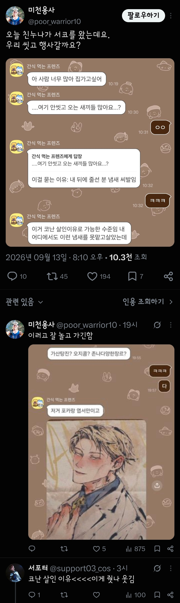

코난 살인 이유 ㅋㅋㅋㅋㅋ

코난 살인 이유 ㅋㅋㅋㅋㅋ
존댓말 하는 경우 많지 있지 않아?
오빠를 오빠라고 부르는 경우가 흔하지 않는것처럼
뭐?
오빠는 보통 야라고 부름
떽
부모님이 낳아주신 내 아내인데 남편에게 존대하는게 옳지
이거 ㄹㅇ 임...상상 초월함
드러운 씹떡 새끼들
비유가 아니라 진짜로
저 경우면 옷이 문제임
안씻고 세탁을 안함
걍 안씻어서 개냄새나는 애들이 있음
옷이 진짜 문제임 체취는 멀리 안가는데 옷이 진짜 가득채움
ㄹㅇ임
이게 이해 안가면 옷에 향수 뿌리고 피부에 향수 뿌리면 어디서 오래가나를 보면 됨... 옷 섬유가 냄새나 그 원인인 온갖 지방 땀 등등 존나 안떨어짐 ㅋㅋ
나도 일반적으로 빨래 하는데 그 냄새가 느껴지가 시작하니까 그럼 좀 늦었지만 환기 하루종일 며칠동안 하고 소독 세제 유연제 쓰고 오래된 옷 버리고 탈취제 쓰니까 좋은 냄새 난다고 하더라
씹덕거르고 진짜 지하철에서 썩은내보면 진짜 씹덕새끼들 아니면 돼지임 편견이 안생길수가없음
일본 굿즈샵갔었을때 멸치씹떡과 돼지씹떡의 듀얼코어 냄새가 개쩔었었지..
ㄹㅇ 북오프갔다가 그거 한번 느껴봄 ㅅㅂ ㅋㅋㅋ
씹덕중에는 사람들 만나며 어울리는걸 못하는
히키애들이 높은 확률로 존재하니까
평소에 사람만날일이 없으니 본인이 참을만한 수준까지 냄새가 나도 노상관
난 내몸에서 쉰내나면 모를수가 없겠던데, 세탁조 홈크린꺼 주황색 그걸로 세탁조 청소도 해야돼, 백날 섬유유연제 표백제 넣고 지랄해봐야 세탁조 오염각이면 소용없음


서코가 머임
서울이나 근방에서 열리는 코믹월드
근데 진짜 왜 안씻고 오는걸까? 매번 씻고 옵시다 광고를 해도 에이 난 안나겠지 ㅋ 싶어서 안씻는건지
아님 씻고 와도 답이 없는건지 아니면 아예 씻을 생각 조차 안하는건지
체취는 본인이 못맡겠지만 옷냄새는 본인도 느끼지않음?
샤워 혹은 외출하고난후, 세탁건조이후 뭐 이렇게 후각새로고침하고 나면 옷냄새 맡아지잖아
아니 그거 본인이 자각 못함
진짜 남들은 씨발 코가 썩어들어갈거같이 고통스러운데 본인은 그걸 아예 몰라
내가 그거 회사동생놈이 그래서 대놓고 저격식으로 말해서 밥사멕이면서 말했는데 빨래가 문제였음
겜하면서빨래돌려놓고 푹 고아뒀다가 걍 껴입는거임 빨래쉰내가 진짜 ...와씨발.....
안겪어본 사람은 그냥 쉰내나 땀냄새가 좀 나나보다 할텐데 그런 냄새가 아님 그냥 존나 기분이 확나빠지는 씨발새끼같은 냄새임
옷 조금 잘못말려서 쉰내나고 더워서 땀나서 냄새나고 그런 흔한 냄새가 절대 아님 진짜 기분이 너무안좋아
ㅋㅋㅋㅋㅋㅋㅋㅋㅋ코난살인나는 이유ㅋㅋㅋㅋㅋㅋㅋ
개붕이들 냄새 신경쓰거나 혼자 살면
한번씩 옷 소재확인 하고 옷 삶아라
냄새 싹 날아간다
세탁 후 건조기 돌리는 것도 효과적이다
옷에 땀냄새는 균에서 나오는거거든
기분나쁜 코가 아픈 시큼한 냄새가남 ㅋㅋㅋ
샤워도 샤워인데 자취하는 씹덕이 빨래 잘 못해서 냄새 심한경우도 많음 씹덕들 행사 방문 템플릿에 빨래하는 법 빨래말리는법도 추가해야함. 그냥 세제 섬유유연제 때려넣고 돌린다고 해결되는게 아니라서
물샤워 빌런들 개드립에서 사라지니까 괜시리 그립고 그렇네… 나라도 물샤워 빌런이 될까?
이해합니다
맡아본 사람들만 안다는 그냄새
애초에 씻는거조차 거의 안하는애들한테 뭐 오버스펙이긴 한데
건조기 <<< 이새끼 ㄹㅇ 갓갓임
자취하는애들 동네 중고가전 같은데 가보면
내부 뜯어서 청소완료된거 한 15만원 안쪽으로 살수있는데
이거라도 갖다놓고 쓰면 ㄹㅇ 빨래쉰내 절대 안남
샤워 잘 하고 건조기만 잘 돌려도 어디가서 냄새로 고민할일이 절대 없어짐
누나가 동생한테 존댓말함?